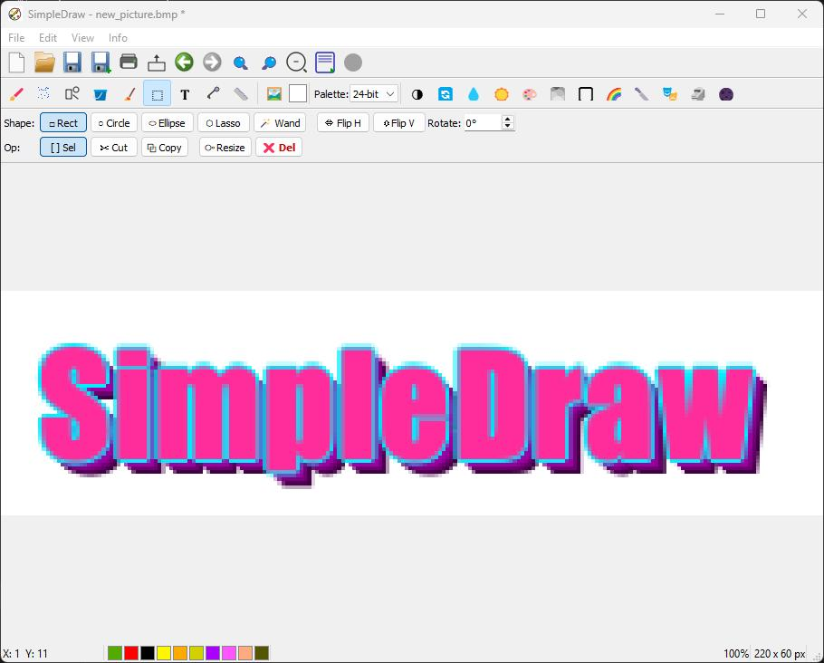
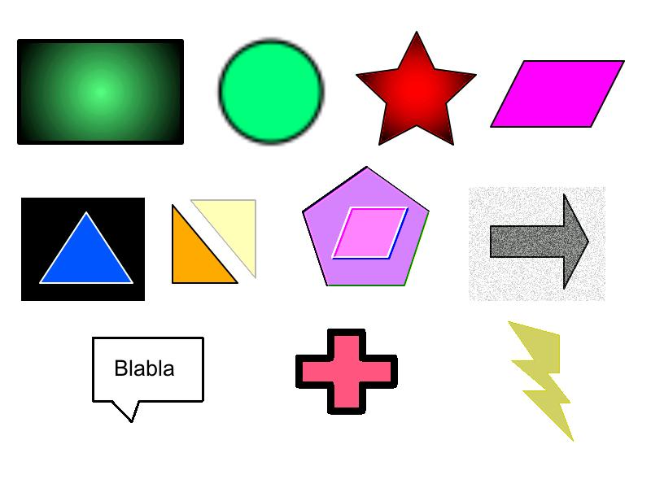
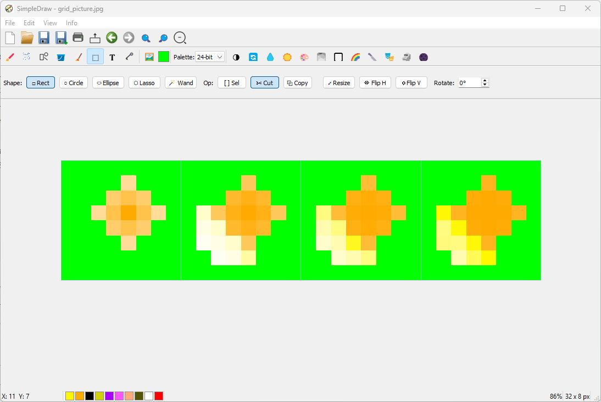
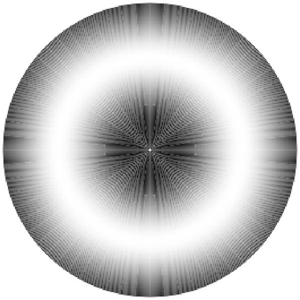

SimpleDraw
User Documentation · Version 1.0.0
Overview
SimpleDraw is a lightweight pixel-based drawing application built with Python and PyQt5. It supports multiple drawing tools, shape forms, image effects, color management with history, dual left/right channel colors, macro recording, and flexible canvas sizing.

Interface
Layout
- Menu bar – File, Edit, Effects, View, Info menus.
- Quick bar – Icon buttons: New, Open, Save, Save As, Print, Export, Undo, Redo, Zoom In/Out/Reset, Scripts, Record.
- Tool bar – Tool selector buttons, palette selector, grayscale toggle, background color, effect shortcuts.
- Option bar – Context-sensitive options for the active tool.
- Canvas – The drawing area. Supports pan (middle-mouse drag) and zoom (scroll wheel).
- Status bar – Shows cursor position, canvas size, zoom level, and color history swatches.
Mouse Navigation
| Action | Result |
|---|---|
| Middle-mouse drag | Pan the canvas |
| Scroll wheel | Zoom in / out (centered on cursor) |
| Left-click / drag | Primary action (left channel color) |
| Right-click / drag | Secondary action (right channel color) |
Tools
Select a tool from the toolbar or press its keyboard shortcut.
Freehand drawing with configurable width, pen type, and smoothing.
Airbrush-style spray with radius and density control.
Draw geometric shapes: lines, rectangles, circles, and more.
Flood-fill a region with the selected color.
Erase pixels to the background color.
Select, cut, copy and move regions.
Place formatted text on the canvas.
Sample a color from the canvas.
Measure distances and angles on the canvas.
Pencil
Freehand drawing tool. Left-click draws with the primary color; right-click draws with the secondary color. Both channels are independent and fully configurable.
Options
| Option | Description |
|---|---|
| Width (L / R) | Stroke width in pixels for left and right channels independently. |
| Color (L / R) | Color buttons for each channel. |
| Pen type | Drawing style per channel. See Pen Types below. |
| Intensity | Opacity / blend strength (1–100%). Affects all pen types. |
| ∿ Bezier | Auto-smooth the stroke into a Bézier curve on mouse release. |
| Smooth / % | Real-time smoothing applied while drawing. Higher % = smoother strokes. |
| Line-Smooth % | Post-stroke smoothing strength applied on release (0 = off). |
| Sym H / Sym V | Mirror strokes horizontally and/or vertically around the canvas centre. |
Pen Types
Each pencil channel has an independent pen type. The type affects how dots are blended onto the canvas as you draw. Intensity (1–100%) controls the overall opacity or blend strength for all types.
| Type | Description |
|---|---|
| normal | Solid opaque pixels. At intensity <100% each pixel is alpha-blended with the existing canvas color. |
| chalk | Rough, grainy texture. Dots are scattered randomly within the brush radius with varying opacity, simulating a chalk stick. |
| charcoal | Soft smudgy strokes. A radial falloff blends the color into the canvas with slight randomness, like dragging charcoal. |
| calligraphy | Flat angled nib. The brush is wide on one axis and thin on the other, rotated 45°, producing thick/thin strokes depending on direction. |
| watercolor | Translucent wet edges. Color fades toward the brush boundary with soft randomness, building up with repeated strokes. |
| oil | Thick blending. Each dot mixes the pen color with the existing canvas color at 50% strength, creating a smooth paint-mixing effect. |
| glow | Soft radial halo. A bright core fades into a wide bloom, useful for light sources and neon-like glows at lower intensities. |
| neon | Bright core with a wide color bloom. The center is lightened toward white; the surrounding bloom uses the pen color at reduced opacity. |
Spray
Airbrush tool. Hold left-click to spray with the primary color; hold right-click for the secondary color. Dots are placed continuously while the button is held.
Options
| Option | Description |
|---|---|
| Radius (L / R) | Spray circle radius in pixels for each channel. |
| Density (L / R) | Number of dots placed per timer tick for each channel. |
| Color (L / R) | Color buttons for left and right spray channels. |
Forms
Draw geometric shapes by clicking and dragging. Right-click while dragging cancels the current shape.
Available Shapes
- Line – Straight line with optional arrowheads at start and/or end.
- Rectangle – Filled or outlined rectangle with optional rounded corners.
- Ellipse – Filled or outlined ellipse.
- Circle – Radius-based circle. Supports donut mode, arc/pie segments, and span angle.
- Triangle – Configurable orientation (horizontal / vertical / perpendicular).
- Trapezoid – Standard trapezoid. Use ⇕ Flip to invert it vertically.
- Parallelogram – Horizontal or vertical orientation.
- Arrow – Arrow polygon shape with configurable head size and direction.
- Star – Configurable number of points (corners).
- N-gon – Regular polygon with configurable number of edges.
- Cross – Plus / cross shape.
- Heart – Heart shape.
- Lightning – Lightning bolt shape.
- Callout – Speech-bubble shape with configurable tail position.

Options
| Option | Description |
|---|---|
| Pen color / width | Outline color and thickness. |
| Fill color | Interior fill color. |
| Transparent fill | Draw outline only, no fill. |
| Line style | Solid, dashed, dotted, or dash-dotted outline. |
| AA | Anti-aliasing toggle for smooth edges. |
| Corner radius (R) | Rounded corners for rectangles. |
| From / Span | Start angle and span for circle arcs (degrees). |
| Pie | Draw a filled pie slice instead of an arc. |
| ⊙ Donut / Gap | Hollow circle with configurable inner gap. |
| Arrow options | Arrowhead at start, end, or both; inward/outward direction; head size. |
| N (corners / edges) | Number of star points or polygon sides. |
| Tail % | Horizontal position of the callout tail (0–100%). |
| ⊞ Snap | Snap shape endpoints to the grid (requires grid to be visible). |
Fill (Flood Fill)
Fills a contiguous region of the same color. Respects the active selection if one exists.
| Action | Color used |
|---|---|
| Left-click | L-Click fill color |
| Right-click | R-Click fill color |
Options
| Option | Description |
|---|---|
| L-Click color | Fill color used on left-click. |
| L-Click Tolerance | 0 = exact color match only; higher values fill pixels with similar colors (max 255). |
| R-Click color | Fill color used on right-click. |
| R-Click Tolerance | Independent tolerance for right-click fills. |
Eraser
Paints pixels with the current background color. Drag to erase continuously. Right-click cancels any active selection.
Options
| Option | Description |
|---|---|
| Width | Eraser size in pixels. |
Selection
Select a region of the canvas to move, copy, cut, or apply effects to.
Selection Modes
| Mode | Description |
|---|---|
| Rectangle | Drag to draw a rectangular selection. |
| Circle | Drag to draw a circular selection (radius from center). |
| Ellipse | Drag to draw an elliptical selection. |
| Lasso | Draw a freehand polygon selection. |
| Magic Wand | Click to select a contiguous region of similar color. |
Operations
| Operation | Description |
|---|---|
| Select | Mark a region without lifting pixels. |
| Cut | Lift the selected pixels (replaced with background color) into a floating layer. Drag to reposition, then click outside to commit. |
| Copy | Copy the selected pixels into a floating layer. The original stays intact. Click the origin to stamp another copy. |
Option Bar
| Option | Description |
|---|---|
| Shape | Selection shape: Rectangle, Circle, Ellipse, Lasso, or Magic Wand. |
| Op | Operation mode: Select, Cut, or Copy. |
| ⤢ Resize | Enable resize handles on the selection boundary. Drag any of the eight handles to resize. |
| ⇔ Flip H / ⇕ Flip V | Flip the floating cut or copy layer horizontally or vertically. |
| Rotate | Rotate the floating cut or copy layer by the specified angle. |
| Delete | Delete the selected region (fill with background color). |
Text
Click on the canvas to place text at that position. A live preview follows the cursor.
Options
| Option | Description |
|---|---|
| Font | Font family selector. |
| Size | Font size in points. |
| Bold / Italic / Underline | Text style toggles. |
| Text color | Foreground color of the text. |
| Background color | Background fill behind the text. |
| Transparent background | No background fill. |
| AA | Anti-aliasing for text rendering. |
| Box | Draw a border box around the text. |
| Box style / color / margin / width | Configure the border box appearance. |
| Text input | Type the text to be placed. |
Color Picker
Sample a color directly from the canvas. Hold Alt from any tool to temporarily switch to the picker.
| Action | Result |
|---|---|
| Left-click | Sets the primary color (pen, fill, text, spray left). |
| Right-click | Sets the secondary color (pen right, fill right, spray right). |
Options
| Option | Description |
|---|---|
| L-Pick swatch | Shows the last left-picked color with its RGB values. |
| L-Pick R | Sample radius for left-click. 0 = single pixel; higher values average surrounding pixels. |
| R-Pick swatch | Shows the last right-picked color with its RGB values. |
| R-Pick R | Independent sample radius for right-click. |
Ruler
Measure distances and angles between two points on the canvas.
- Left-click and drag to draw a measurement line.
- The status bar shows ΔX, ΔY, Length (pixels), and Angle (degrees) in real time.
- Right-click or press Escape to clear the ruler line.
Colors
Dual Channel
- Left channel – activated by left-click. Controls pen color, fill color, spray color, text color.
- Right channel – activated by right-click. Controls secondary pen, fill, and spray colors.
Color History
The last 10 used colors are shown as small swatches in the status bar.
- Left-click a swatch to apply it to all left-channel colors.
- Right-click a swatch to apply it to all right-channel colors.
Background Color
Used by the Eraser and as the fill when cutting a selection. Click the Background Color button (B) in the toolbar to change it.
Palette / Color Depth
| Depth | Colors |
|---|---|
| 1-bit | 2 (black & white) |
| 2-bit | 4 grayscale levels |
| 4-bit | 16 grayscale levels |
| 8-bit | 256 colors |
| 16-bit | 65 536 colors |
| 24-bit | 16.7 million colors (default) |
| 32-bit | 24-bit + alpha channel |
Canvas
Canvas Size
Open via Edit → Size. Includes lock-ratio, ratio presets (4:3, 16:9, 16:10, 2:3, 5:7, 9:16), and size presets (8×8 up to 4K).
Grid
Toggle via View → Show Grid. Configure cell size via View → Grid Settings. Enable ⊞ Snap in the Forms option bar to snap shape endpoints to the grid.

Zoom
| Action | Result |
|---|---|
| Scroll wheel | Zoom in / out centered on cursor |
| Quick bar Zoom In / Out | Zoom ×1.25 / ÷1.25 |
| Quick bar Reset Zoom | Fit canvas to window |
Flip & Rotate
Available under Edit menu: Flip Horizontal, Flip Vertical, Rotate Clockwise (90°), Rotate Counter-Clockwise (90°).
Effects
Found under the Edit → Effects menu and as toolbar shortcuts. Apply to the active selection if one exists, otherwise to the entire canvas.
| Effect | Description |
|---|---|
| Grayscale | Convert to grayscale (toggle). |
| Invert | Invert all pixel colors. |
| Smooth | Blur with configurable radius. |
| Sharpen | Enhance edge contrast. |
| Brightness / Contrast | Adjust with sliders (−100 to +100). |
| Saturation | Increase or decrease color saturation (−100 to +100). |
| Noise | Add random pixel noise (0–100). |
| Pixelate | Blocky pixelation with configurable block size. |
| Color Fade | Gradient blend between two colors across the canvas. |
| Posterize | Reduce the number of color levels (2–16). |
| Emboss | Emboss / relief effect. |
| Vignette | Darken the edges of the canvas (0–200). |
View
- Show Grid – Toggle pixel grid overlay.
- Grid Settings – Set grid cell width and height in pixels.
- Grayscale preview – Toggle grayscale mode (toolbar button).
- Sym H / Sym V – Mirror pencil strokes horizontally and/or vertically.
File Operations
| Action | Shortcut | Description |
|---|---|---|
| New File | Ctrl+N | Create a new blank canvas. |
| Open | Ctrl+O | Open an image file. |
| Save | Ctrl+S | Save the current file. |
| Save As | – | Save to a new file path. |
| Export Image | – | Export as PNG, JPEG, BMP, TIFF, or WebP. |
| Export to Code | – | Export the image as a C or Python byte array. |
| Ctrl+P | Print the canvas. | |
| Exit | Ctrl+Q | Close the application. |
Recent Files
The last 10 opened files are listed under File → Recent Files.
Clipboard
| Action | Shortcut |
|---|---|
| Copy canvas to clipboard | Ctrl+C |
| Copy selection to clipboard | Ctrl+Shift+C |
| Paste from clipboard | Ctrl+V |
Keyboard Shortcuts
| Key | Action |
|---|---|
| P | Pencil tool |
| S | Spray tool |
| F | Forms tool |
| G | Fill tool |
| E | Eraser tool |
| C | Selection tool |
| T | Text tool |
| I | Color Picker tool |
| R | Ruler tool |
| B | Background color picker |
| Alt (hold) | Temporarily switch to Color Picker |
| Escape | Cancel active selection |
| Delete | Delete selected region |
| Ctrl+Z | Undo |
| Ctrl+Y | Redo |
| Ctrl+N | New file |
| Ctrl+O | Open file |
| Ctrl+S | Save |
| Ctrl+P | |
| Ctrl+C | Copy canvas to clipboard |
| Ctrl+Shift+C | Copy selection to clipboard |
| Ctrl+V | Paste from clipboard |
| Ctrl+Q | Exit |
Preferences
Open via Info → Preferences.
Theme
Switch between Light and Dark application themes.
Shortcuts
All keyboard shortcuts are listed in a table. Double-click a shortcut cell, press the desired key combination, then click Apply or OK to save.
Auto-save
Set an auto-save interval in minutes (0 = disabled). Auto-save writes to <filename>_autosave.bmp next to the current file.
All tool settings (colors, widths, pen types, form options, text settings, etc.) are saved automatically on exit and restored on next launch.
Scripts / Macros
SimpleDraw supports Python macro scripts that automate drawing operations. Scripts are plain .py files placed in the scripts/ folder next to the application.
Opening the Scripts Window
Click the Scripts button in the quick bar. The window lists all .py files in the scripts/ folder.
Running a Script
- Select a script from the list.
- Click ▶ Run. The button changes to ■ Stop while running.
- Click ■ Stop to interrupt at the next API call.
Console
Click Console to open the output window showing print() output and error tracebacks. The console opens automatically on error.
Writing a Script
The canvas is exposed as the object canvas. Qt types QColor, QPoint, QRect, QPainter, QPen are also available.
canvas.push_undo() once before your drawing operations and canvas.commit() at the end. Avoid calling push_undo() inside a tight loop.w, h = canvas.get_size()
canvas.push_undo()
step = 40
for x in range(0, w, step):
canvas.draw_form('line', (x, 0), (x, h-1), width=1, color='#aaaaaa', transparent=True)
for y in range(0, h, step):
canvas.draw_form('line', (0, y), (w-1, y), width=1, color='#aaaaaa', transparent=True)
canvas.commit()
import math
can_size = 265
canvas.set_size(can_size, can_size)
canvas.push_undo()
canvas.clear()
canvas.set_background_color(255, 255, 255)
start_pos = (can_size / 2, can_size / 2)
max_wave = int((can_size - 5) / 2)
for radius in range(1, max_wave, 1):
c = int(127 * math.sin(2 * math.pi * radius / max_wave - 128) + 128)
canvas.draw_form('circle', start_pos, radius, 1, (c, c, c), (0, 0, 0), True, 0, 0, False, True)
canvas.commit()

Script API Reference
All methods are called on the canvas object.
Starting and Stopping
- Click the Record button (grey circle) in the quick bar to start recording. The button turns red.
- Click again to stop. The script is saved automatically to the
scripts/folder with a timestamped name (recorded_YYYYMMDD_HHMMSS.py). - The saved script appears immediately in the Scripts window.
What Gets Recorded
| Action | Recorded as |
|---|---|
| Pencil stroke (left or right channel) | canvas.draw_stroke(...) |
| Spray (left or right channel) | canvas.spray(...) |
| Form shape | canvas.draw_form(...) |
| Fill (left or right click) | canvas.fill(...) |
| Text placement | canvas.draw_text(...) |
| Rectangle / circle / ellipse selection (Select mode) | canvas.set_selection(...) |
| Magic wand selection (Select mode) | canvas.set_selection('wand', ...) |
| Canvas resize | canvas.set_size(...) |
| Flip / rotate canvas | canvas.apply_effect(...) |
| Effects (sharpen, emboss, grayscale, invert, etc.) | canvas.apply_effect(...) |
| Deselect (Escape / right-click after a used selection) | canvas.deselect() |
canvas.deselect().Colors in Recorded Scripts
Repeated colors are automatically extracted into named variables (c1, c2, …) at the top of the script to keep it readable.
Recording
SimpleDraw can record your drawing actions into a replayable Python script.
Canvas Info
| Method | Returns | Description |
|---|---|---|
get_size(ghost=False) | (w, h) | Canvas (or ghost) width and height in pixels. |
set_size(w, h) | – | Resize the canvas to w × h pixels. |
clear(ghost=False) | – | Fill canvas with background color (or ghost with transparent). |
Colors
| Method | Returns | Description |
|---|---|---|
get_color(pos, tolerance=0, ghost=False) | (r,g,b) or -1 | Color at (x,y). tolerance>0 averages a neighbourhood. Returns -1 if out of bounds. |
get_background_color() | (r,g,b) | Current background color. |
set_background_color(r, g, b) | – | Set the background color. |
Drawing
| Method | Description |
|---|---|
draw(pos, channel=1, color=None, ghost=False) | Draw a single pixel at (x,y). color: hex string, name, or (r,g,b) tuple — if omitted, uses the channel's current pen color. channel: 1=primary, 2=secondary. |
draw_stroke(points, width=1, color=None, pen_type='normal', intensity=100) | Draw a polyline through a list of (x,y) tuples. color: hex string, name, or (r,g,b) tuple. pen_type: normal, chalk, charcoal, calligraphy, watercolor, oil, glow, neon. intensity: 1–100. |
draw_form(form_type, pos1, pos2, width=1, color=None, fill_color=None, transparent=False, corners=4, edges=5, antialias=False, ghost=False) |
Draw a shape. form_type: line, rectangle, ellipse, circle, triangle, trapezoid, parallelogram, arrow, star, ngon, cross, callout, heart, lightning.pos1: start point or center (x,y). pos2: end point (x,y), or a number — for circle this is the radius from pos1.corners: star points (star only). edges: polygon sides (ngon only). |
fill(pos, color=None, tolerance=0) | Flood-fill at (x,y). Respects active selection. |
spray(pos, radius=20, density=30, color=None) | Spray dots at pos. pos can be a single (x,y) or a list of (x,y) tuples (as recorded by the spray tool). |
Pen Types
| pen_type | Description |
|---|---|
normal | Solid pixels. At intensity <100% each pixel is alpha-blended with the canvas. |
chalk | Grainy scattered dots with random opacity within the brush radius. |
charcoal | Soft radial falloff with slight randomness, builds up with repeated strokes. |
calligraphy | Flat 45°-angled nib — wide on one axis, thin on the other. |
watercolor | Translucent with soft fading edges, builds up with repeated strokes. |
oil | Blends pen color with existing canvas color at 50% per dot. |
glow | Bright core with a wide soft halo fading outward. |
neon | Lightened core near white with a wide color bloom around it. |
Text
| Method | Description |
|---|---|
draw_text(text, pos, font=None, size=None, bold=False, italic=False, underline=False, color=None, bg_color=None, bg_transparent=None, antialias=None, box=False, box_color=None, box_margin=None, box_style='solid', box_width=1, ghost=False) | Render text at pos (x,y) with full style control. All style args are optional — omitting them uses current Text tool settings. |
Effects
Effects respect the active selection if one is set via set_selection().
| Call | Description |
|---|---|
apply_effect('grayscale') | Convert to grayscale. |
apply_effect('invert') | Invert all colors. |
apply_effect('smooth', radius=1) | Blur with given radius. |
apply_effect('sharpen') | Sharpen edges. |
apply_effect('emboss') | Emboss relief effect. |
apply_effect('brightness_contrast', brightness=0, contrast=0) | Adjust brightness/contrast (−100 to +100). |
apply_effect('saturation', value=0) | Adjust saturation (−100 to +100). |
apply_effect('noise', value=10) | Add random noise (0–100). |
apply_effect('pixelate', block=8) | Pixelate with given block size. |
apply_effect('posterize', levels=4) | Reduce color levels (2–16). |
apply_effect('vignette', strength=100) | Darken edges (0–200). |
apply_effect('flip_horizontal') / 'flip_vertical' | Flip the canvas. |
apply_effect('rotate_cw') / 'rotate_ccw' | Rotate the canvas 90°. |
Selection
| Method | Returns | Description |
|---|---|---|
set_selection(shape, x, y, w, h) | {x,y,w,h} | Set the active selection. shape: rectangle, circle, ellipse, wand. For wand, x,y is the click point — the flood-fill mask is rebuilt from the image at that point. For circle/ellipse, x,y,w,h define the bounding box. |
deselect() | – | Clear the active selection. |
Ghost Canvas
A hidden off-screen image the same size as the visible canvas. Only scripts can access it.
| Method | Description |
|---|---|
copy_to_ghost() | Copy the visible canvas into the ghost. |
copy_from_ghost() | Composite the ghost onto the visible canvas. |
Pass ghost=True to draw(), draw_form(), draw_stroke(), get_color(), get_size(), clear(), save_image(), and load_image() to target the ghost.
File I/O
| Method | Returns | Description |
|---|---|---|
save_image(filename, ghost=False) | full path | Save the canvas (or ghost) to scripts/filename. |
load_image(filename, ghost=False) | (w,h) | Load scripts/filename into the canvas or ghost. Pushes an undo entry when loading into the visible canvas. |
Cursor
| Method | Returns | Description |
|---|---|---|
get_cursor_pos() | (x,y) or -1 | Current mouse position in canvas coordinates, or -1 if outside. |
set_cursor_pos(x, y) | (x,y) or -1 | Move the cursor to (x,y). Returns -1 if out of bounds. |
Undo / Commit
| Method | Description |
|---|---|
push_undo() | Save the current canvas state to the undo stack. Call once before a batch of drawing operations. |
commit() | Refresh the canvas display and mark the file as modified. Call at the end of your script. |